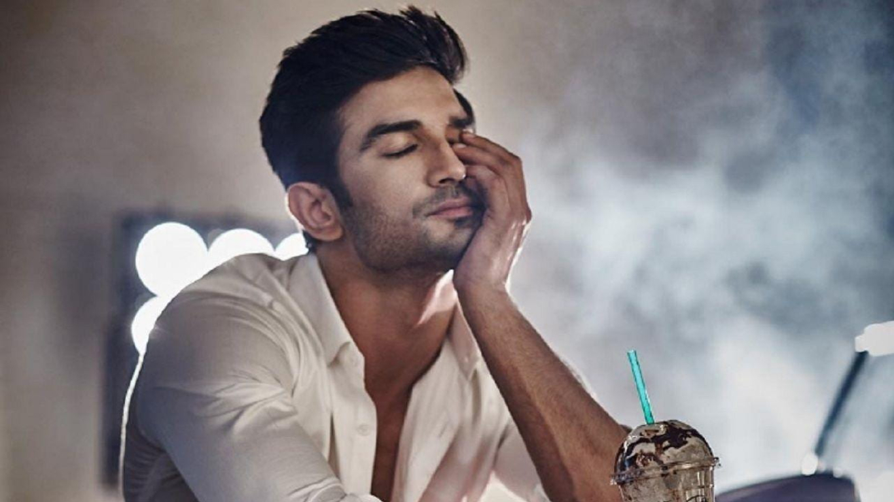

Sushant Sing Rajput, (1986-2020)

I am not lost.
I am very much alive.
Biography
Sushant Singh Rajput was born on January 21, 1986, to Krishna Kumar Singh and Usha Singh, in Purnia, Bihar. He did his schooling from St. Karen's High School in Patna and then from Kulachi Hansraj Model School in New Delhi. Sushant Singh Rajput was good at studies and cleared 11 engineering entrance examinations in his entire life. In 2003, he secured the seventh rank in the Delhi College of Engineering Entrance Exam and got admitted in B.E. Mechanical Engineering. Sushant was also a National Olympiad Winner in Physics. At Delhi College of Engineering, he actively participated in theatre. He drops out of college to pursue his acting career.